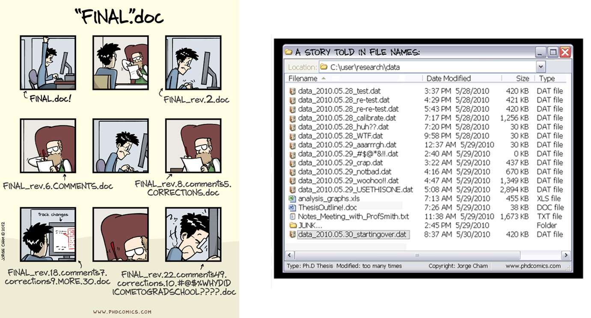
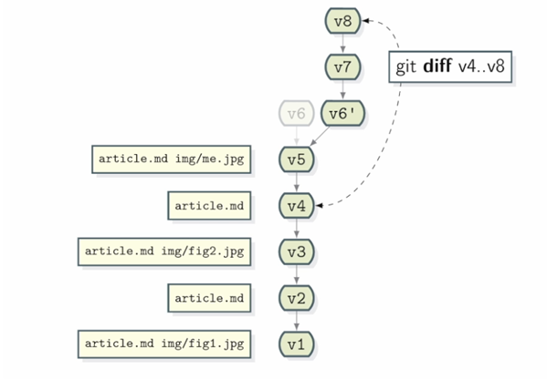

3 📘 Version control with Git
3.1 Introduction
3.1.1 Overview
Does the following situation rings a bell?

GitHub is a code hosting platform for version control and collaboration.
3.1.2 Learning objectives
In this chapter, we introduce basic elements of Git and GitHub. To learn more about this powerful tool, we refer the reader to the resources listed in Section D.2.
3.2 Git, GitHub and GitHub Desktop
| Git | Free and open source version control system | |
| GitHub | Cloud-based hosting platform that lets you host and manage Git repositories. | |
| GitHub Desktop | Application that allows to interact with GitHub through a graphical interface instead of using the command line (for software developers) or GitHub’s web browser. | |
Please review the following sections for instructions on installation steps:
- Create a GitHub account (Section B.1)
- Install GitHub Desktop (Section B.2)
3.3 Create a new local GitHub Desktop repository
- In the File menu, click New repository.
- Enter a name for your repository.
- Click Choose to select the local directory in which your new repository will be created
- Using Windows Explorer, navigate to the local repository you want to add.
- You can choose to create a README file in the repository (optional)
- Click Create repository.
3.4 Version control
The version control capabilities of Git permit us to keep track of changes we make to our code. We can also revert back to previous versions of files. Git also permits us to create branches in which we can test out ideas, then decide if we merge the new branch with the original.

3.5 Push and Pull